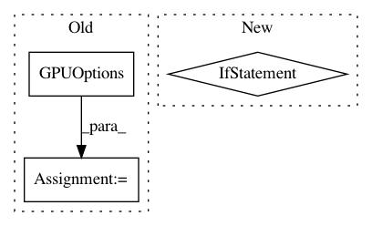

65878bf34c16e45b6ffaedef305fa260cf474498,softqlearning/misc/tf_utils.py,,get_configuration,#,16
Before Change
def get_configuration():
Returns personal tensorflow configuration.
config_args = dict(
gpu_options=tf.GPUOptions(
allow_growth=config.TF_GPU_ALLOW_GROWTH,
per_process_gpu_memory_fraction=config.TF_GPU_MEM_FRAC,
),
log_device_placement=config.TF_LOG_DEVICE_PLACEMENT,
)
if not config.TF_USE_GPU:
config_args["device_count"] = {"GPU": 0}
return tf.ConfigProto(**config_args)
After Change
def get_configuration():
Returns personal tensorflow configuration.
if config.USE_GPU:
raise NotImplementedError
config_args = {}
return tf.ConfigProto(**config_args)
In pattern: SUPERPATTERN
Frequency: 4
Non-data size: 3
Instances
Project Name: rail-berkeley/softlearning
Commit Name: 65878bf34c16e45b6ffaedef305fa260cf474498
Time: 2018-01-23
Author: haarnoja@users.noreply.github.com
File Name: softqlearning/misc/tf_utils.py
Class Name:
Method Name: get_configuration
Project Name: CyberReboot/NetworkML
Commit Name: e2226f604c7f6444630be324d06a8130a01f3366
Time: 2018-01-22
Author: CStephenson970@gmail.com
File Name: NodeClassifier/utils/rnnclassifier.py
Class Name: AbnormalDetector
Method Name: __init__
Project Name: OpenNMT/OpenNMT-tf
Commit Name: 56eb956febb92a599a4d45030eb1a7cf2f843237
Time: 2019-06-19
Author: guillaume.klein@systrangroup.com
File Name: opennmt/bin/main.py
Class Name:
Method Name: main
Project Name: tensorlayer/tensorlayer
Commit Name: 69d9220f450db20ce2e43a7c7f095b4d891565cc
Time: 2019-04-17
Author: rundi_wu@pku.edu.cn
File Name: tensorlayer/utils.py
Class Name:
Method Name: set_gpu_fraction